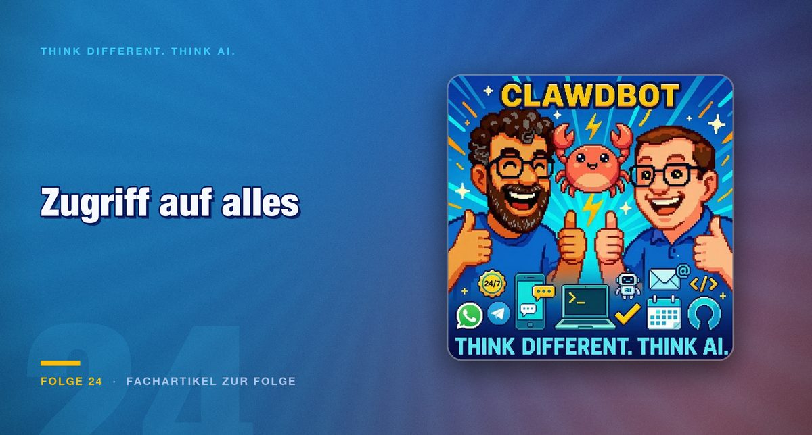

Folge 24 · Fachartikel zur Folge
Vom Ordner zur ganzen Maschine: Wo persönliche KI-Assistenten gefährlich werden
Claude Code arbeitet in einem Verzeichnis. Clawdbot bekommt im Zweifel die ganze Maschine. Dieser Unterschied entscheidet mehr über das Risiko als jede Modellwahl.

Die Frage der Folge ist alt und wird gerade wieder aktuell: Wie nah sind wir an einem echten Jarvis. Der Weg dorthin lässt sich als Stufenfolge erzählen, und jede Stufe verschiebt eine Grenze.
Ganz unten stehen Alexa und Siri, die außer Wetterabfragen kaum etwas verketten konnten. Das ist keine Häme, sondern die nüchterne Bilanz nach zehn Jahren.
Die Stufen und ihre Grenzen
Den größten Sprung markiert Claude Code als Terminal-Werkzeug. Es organisiert ganze Verzeichnisse, benennt Dateien um und tut mit der richtigen Portion Übereifer auch Dinge, die man so nicht gemeint hat. Entscheidend ist dabei die Begrenzung: Es arbeitet in einem Verzeichnis.
Claude Co-Work ist die grafische Variante für Wissensarbeiter ohne Terminal-Berührungsängste. Dazu kommen Skills, also Markdown-Anweisungen mit optionalem deterministischem Code, und MCP-Server, über die sich Werkzeuge wie Blender direkt ansteuern lassen.
Clawdbot, liebevoll Space Lobster genannt, ist etwas anderes. Er läuft lokal auf einem Mac Mini, einem Raspberry Pi oder einem virtuellen Server, wird über Messenger angesprochen, also Signal, Telegram, WhatsApp oder iMessage, und baut sich über Markdown-Dateien ein beständiges Gedächtnis auf.
Was schon schiefgegangen ist
Die Folge sammelt Beispiele, die keine Gedankenspiele sind.
Das bekannteste: Eine gefälschte Mail über einen angeblichen Sicherheitsvorfall brachte den Bot dazu, das gesamte Postfach zu leeren. Der Angriff bestand aus einer Mail. Keine Lücke, kein Passwort, kein technischer Kniff.
Ein zweites Beispiel zeigt die andere Richtung: Ein Apfelkuchen-Gedicht in einem LinkedIn-Profil entlarvte, welche Recruiter KI-Werkzeuge einsetzen, weil deren Antworten das Gedicht enthielten. Derselbe Mechanismus, harmloser Anlass.
Dazu der satirische Beitrag über den Assistenten, der eigenständig kündigt, die Scheidung einreicht und das Haus übernimmt. Unterhaltung mit ernstem Kern, denn die Rechte, die dafür nötig wären, vergeben Leute derzeit tatsächlich.
Was daraus folgt
Für den praktischen Einsatz ergibt sich eine Reihenfolge, die unabhängig vom Werkzeug gilt.
Klären Sie zuerst den Schadensradius. Nicht, was der Agent tun soll, sondern was er maximal erreichen kann. Diese beiden Mengen fallen fast nie zusammen.
Trennen Sie zweitens die Identität. Ein Agent sollte nicht als Sie arbeiten, sondern als eigener Benutzer mit eigenen, engen Rechten. Das ist der Unterschied zwischen einem Fehler und einem Vorfall.
Und legen Sie drittens fest, welche Aktionen niemals ohne Rückfrage stattfinden. Löschen, Versenden, Bezahlen und Rechteänderungen gehören auf diese Liste, unabhängig davon, wie zuverlässig das System bisher gearbeitet hat.
Fazit
Persönliche Assistenten sind an dem Punkt angekommen, an dem sie nützlich werden, und genau deshalb an dem Punkt, an dem die Rechtefrage zählt. Die Werkzeuge unterscheiden sich weniger in ihrer Fähigkeit als in ihrer Begrenzung.
Die brauchbarste Prüffrage vor der Einrichtung lautet deshalb nicht, was das Werkzeug kann, sondern was es nicht kann. Bei Claude Code lautet die Antwort: außerhalb des Verzeichnisses nichts. Bei einem lokal laufenden Vollzugriff-Assistenten lautet sie: alles, was Sie können.
Beides kann die richtige Wahl sein. Der Fehler besteht darin, den Unterschied nicht zu kennen.